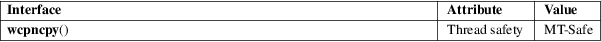

wcpncpy − copy a fixed-size string of wide characters, returning a pointer to its end
Standard C library (libc, −lc)
#include <wchar.h>
wchar_t
*wcpncpy(wchar_t dest[restrict
.n],
const wchar_t src[restrict .n],
size_t n);
Feature Test Macro Requirements for glibc (see feature_test_macros(7)):
wcpncpy():
Since glibc 2.10:
_POSIX_C_SOURCE >= 200809L
Before glibc 2.10:
_GNU_SOURCE
The wcpncpy() function is the wide-character equivalent of the stpncpy(3) function. It copies at most n wide characters from the wide-character string pointed to by src, including the terminating null wide (L'\0'), to the array pointed to by dest. Exactly n wide characters are written at dest. If the length wcslen(src) is smaller than n, the remaining wide characters in the array pointed to by dest are filled with L'\0' characters. If the length wcslen(src) is greater than or equal to n, the string pointed to by dest will not be L'\0' terminated.
The strings may not overlap.
The programmer must ensure that there is room for at least n wide characters at dest.
wcpncpy() returns a pointer to the last wide character written, that is, dest+n−1.
For an explanation of the terms used in this section, see attributes(7).

POSIX.1-2008.
stpncpy(3), wcsncpy(3)